Read the prices.
Pick the port.
Beat the monsoon.
A sailing roguelike in the 17th-century Spice Islands. A chain of contracts, a window of thirty days, and an archipelago that keeps trading — and keeps evolving — long after you stop looking at it.
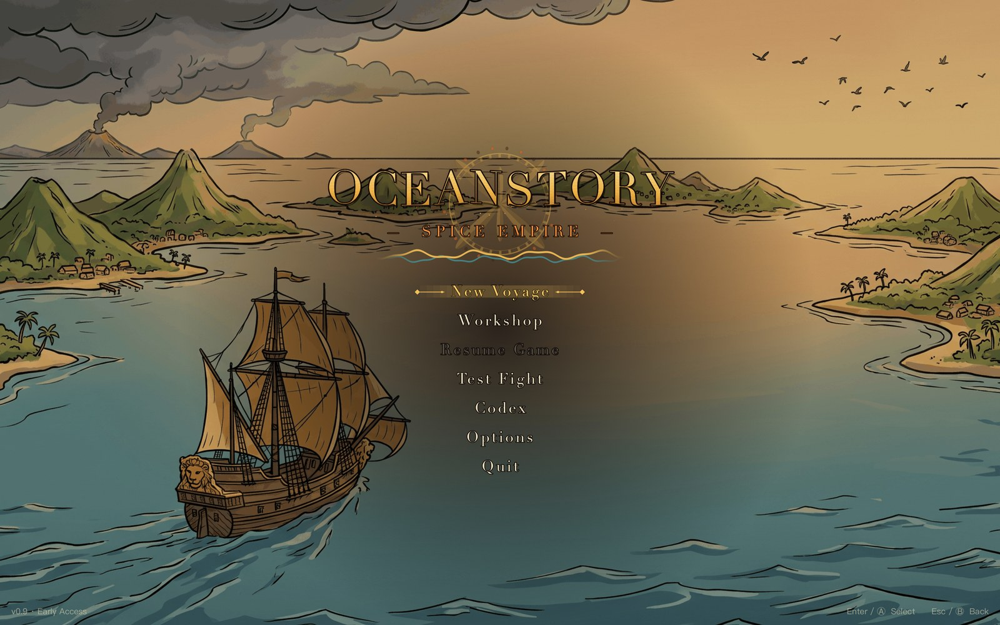
One season, one window
A season is one long voyage. The contracts arrive as a route, not a list: at every port you are offered two or three ways on, each with its own days at sea, its own pay and its own rumours. The monsoon closes the window, and when it closes the season ends with whatever you are holding.
- 30 / 60 / 90days in a season
- 2–3ports offered each stop
- 5ways to win
- 1monsoon window
Five checklists sit on the tactical map. Finish any one of them before the window shuts, and the season is yours.
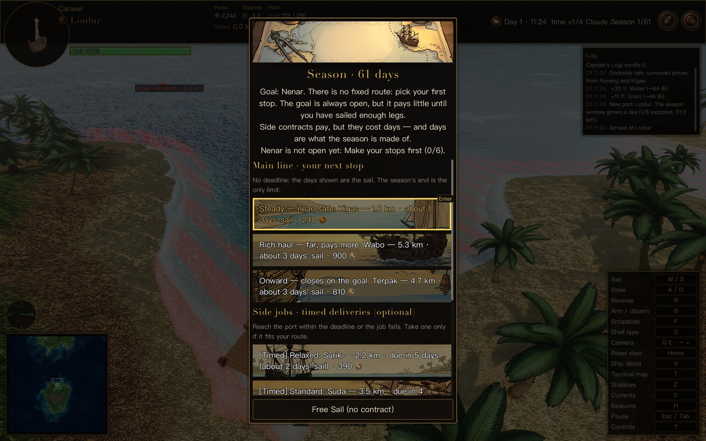
The world moves while you sail
Prices are not a table. People eat, leave and arrive; a town that cannot feed its people empties out and takes its prices with it; powers go to war over a harbour and put a blockade on the road you were planning to use.
A town that leaves
Population moves when a place stops being livable — famine, war, prices, crowding. They go slowly, they need ships, and they can be cut off. Two months later the price you were going to sell at is gone, because half the harbour moved.
Powers that want more
Every faction watches the map for what it does not have. Grudges, ambition and weakness add up to a war, and a war is a line on the map: blockades, sieges, tariffs and a closed port you were counting on.
Ships that trade without you
Twelve merchant hulls read the same prices you do and arbitrage the difference between two islands. Whatever edge you had when you left, they were already closing it when you arrived.
Rumours that are old
The map only shows what you could know. A price you saw ten days ago is a question mark; one from yesterday is solid. Buy intelligence at a port and you get a fresher number — and a worse one.
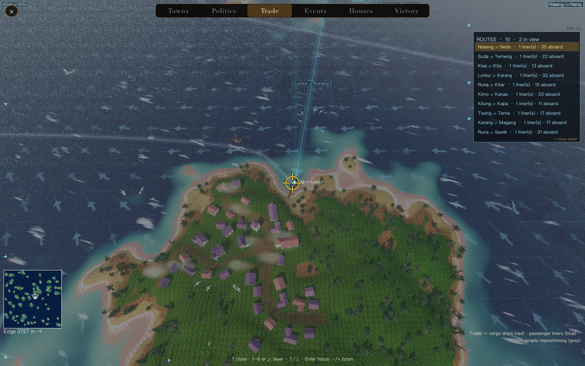
Six hulls, and what happens to them
You start small on purpose. The caravel is free, the longship is free, and everything else is money you have not earned yet — the merchantman costs fifteen hundred the moment you look at it, and the warship, the treasure ship and the ship of the line are bought at the yard.
Caravel
One mast, one square sail
Twelve metres, quick, cheap, and the only ship in the game small enough to hide with. It cannot carry much and it will not win a fight.
Longship
Low in the water, shields on the rail
Fast, shallow-draught, and hard to see coming. The cheap way to be somewhere before anyone else.
Merchantman
Plump, two masts, cream sails
A hold worth filling. Slow, and it turns over in a bad sea, but the cargo pays for everything else in this list.
Warship
Grey hull, dark sails, gun ports
Broadside on both sides, loaded separately. More guns means more gunners, more food, and a longer way round every corner.
Treasure ship
Red sails, a pagoda on her stern
The old empire's hull: gold carving, a stern pavilion, and the biggest hold in the archipelago.
Ship of the line
Three tall masts, blue sails
The largest hull afloat, and the slowest thing in it. Built to be found and fought, not to sail between two islands.
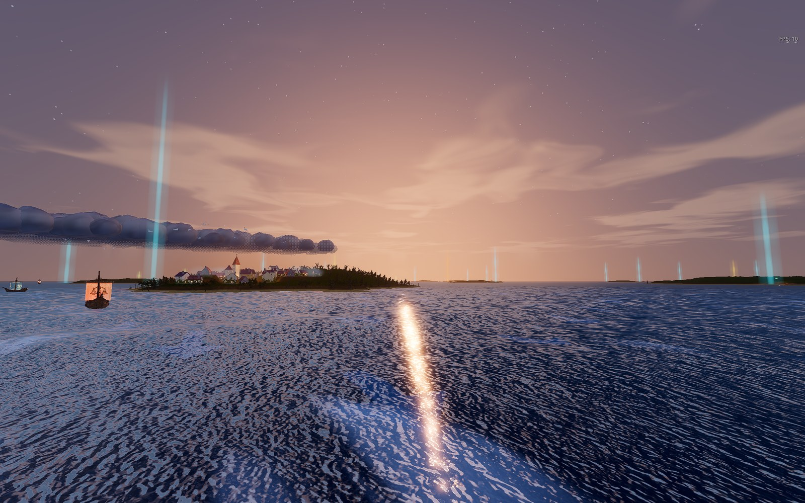
Everything has a weight
Fresh water is heavier than gold. A hold full of water is a slow ship, a ship full of gold is a fast one, and both of them are thirsty. Provisions are drawn from your own cargo: grain and meat for the crew, water for everyone, and not enough of either if you take the long way round.
The broadside
Left and right sides load separately. A gun takes four seconds and gunners, and a hull with more guns needs more of them — so the shot that empties a gun locker also empties the water barrel.
Three kinds of shot
Round shot breaks hulls. Grape shreds sails and kills crew, and it is the only thing in the game that touches a ghost. Explosive wrecks the rudder. Switch with one key.
Damage that stays
Grape goes into the sails, explosive into the rudder, and both keep working on you until they are repaired at a yard. Stripped canvas, a dead helm and a hole in the hull are three different problems with three different prices.
Scurvy
Five days of nothing but meat and the crew starts to fail — slower ship, fewer hands. Eat grain and they come back. Or sail into a port and they recover on their own.
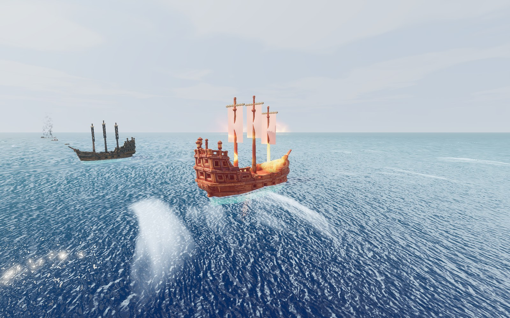
Every screen, on one page
The codex, the shipyard, the chart, the tavern and the night watch — the rest of what you will be looking at.
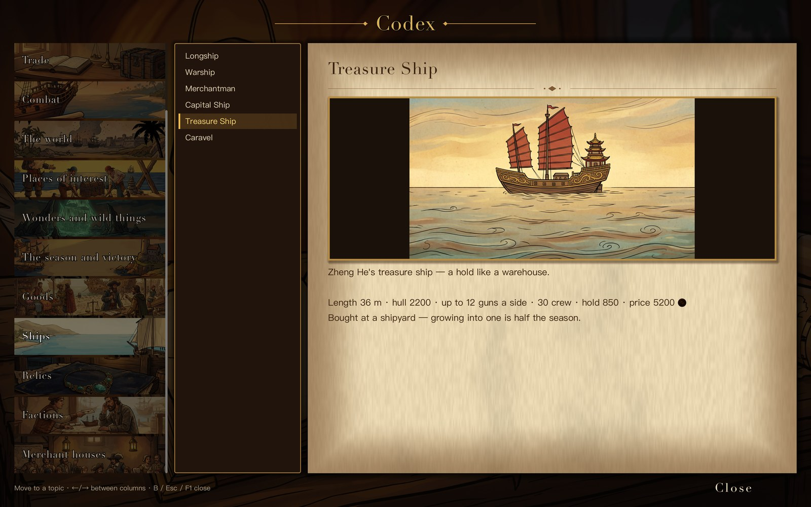
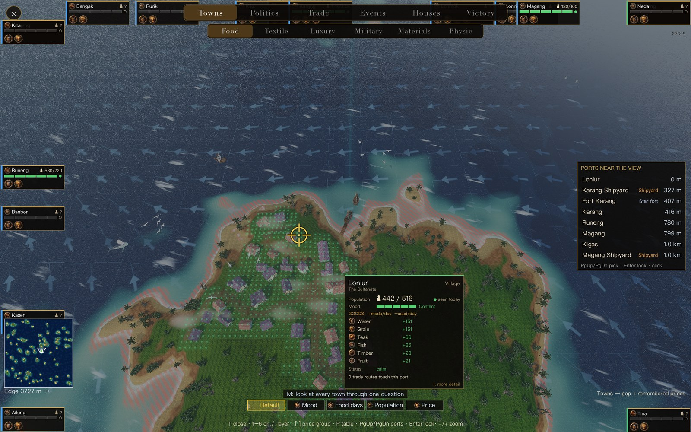
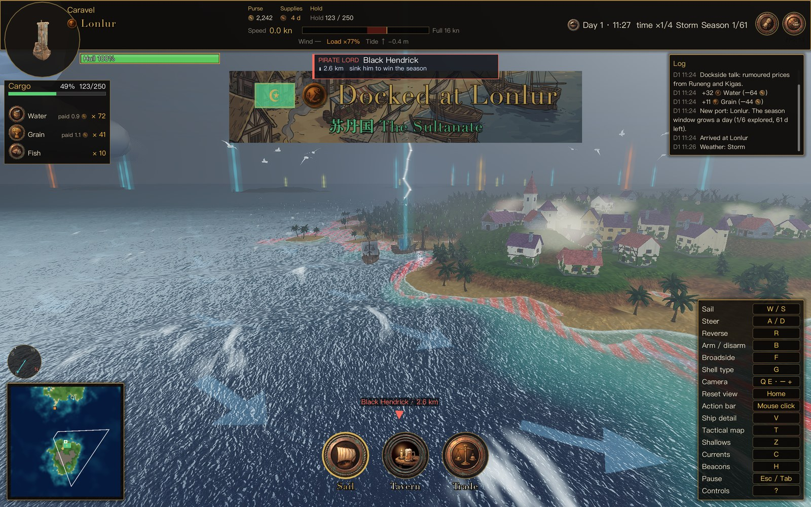
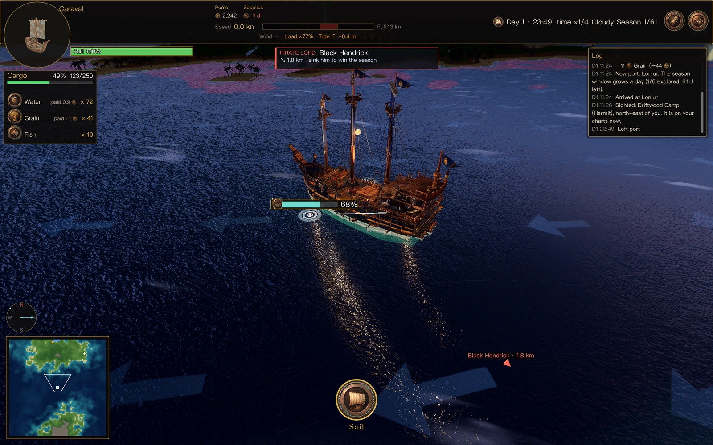
A day passes over the archipelago
Golden hour, sunset, the afterglow, blue hour, night, and the hour before dawn. The sky is keyed to the clock, so a crossing that costs you a day costs you the whole sky as well — and the long blue hours are when the other ships are out there too.
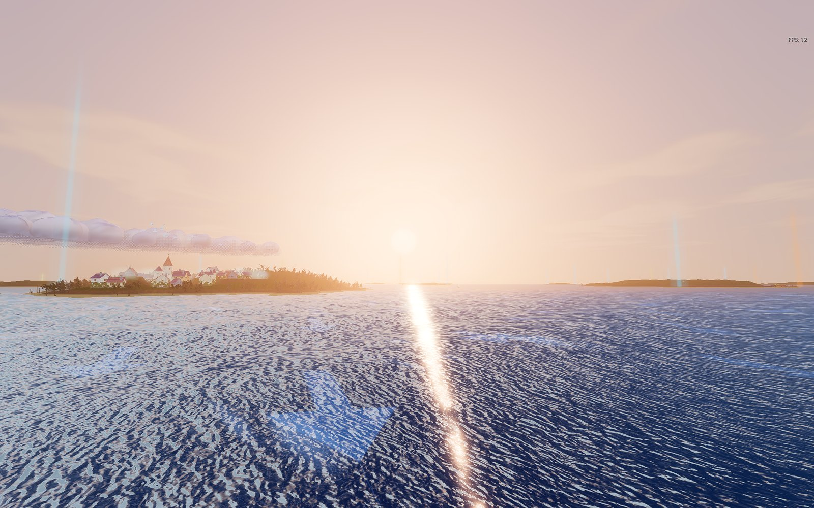
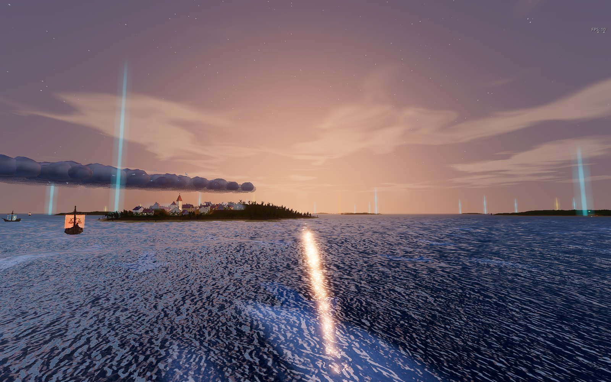
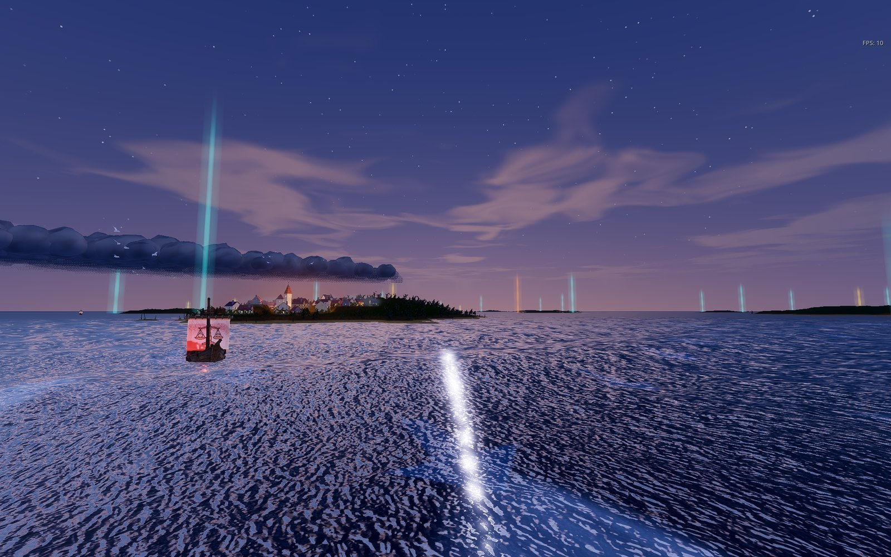
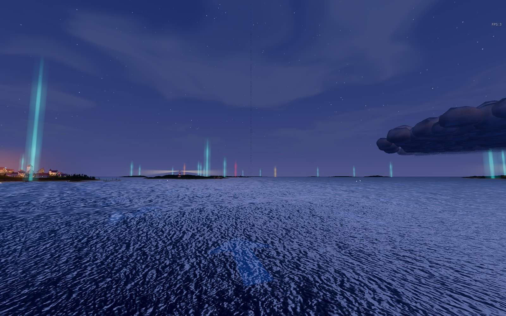
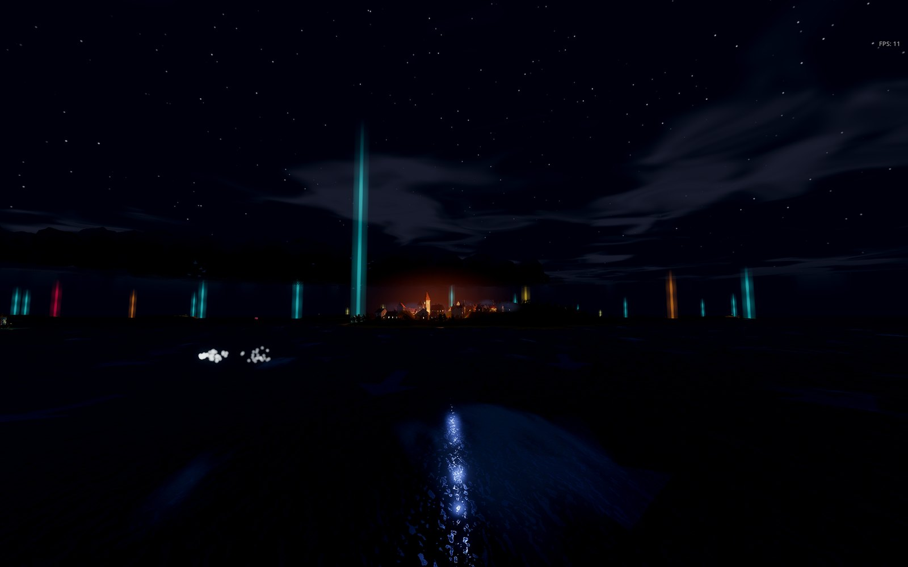
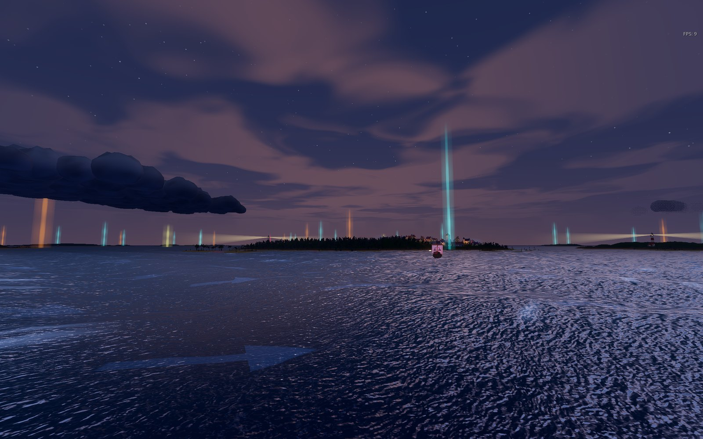
Also in the box
- A Codex of thirteen categories and about a hundred entries — goods, hulls, relics, powers, merchant houses, the islands — written from the world's own data.
- Ten save slots, each on its own map. A new voyage retires the old runs; the campaign meta-progress across them stays.
- Keyboard and gamepad, both fully mapped. Sails, guns, charts and menus are all reachable without a mouse.
- English and Chinese, switchable at any time, from the main menu.
- An archipelago that keeps evolving between runs: the harbours you emptied, the prices you broke and the ports you closed are all still there, waiting for the next season.